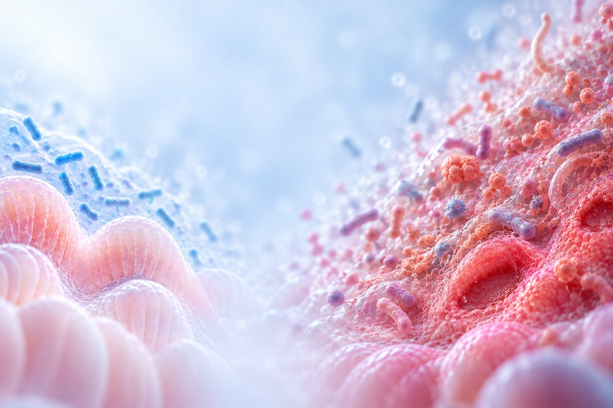
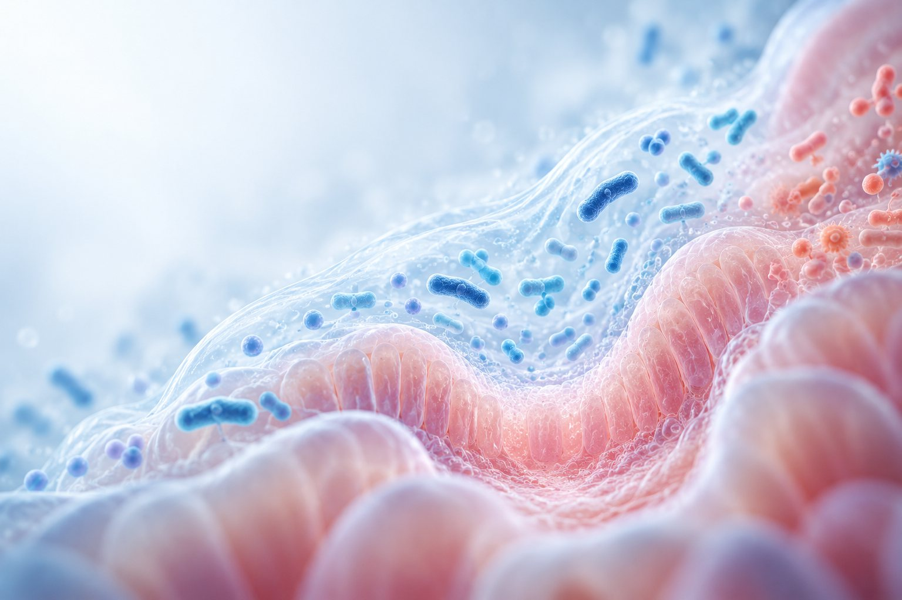
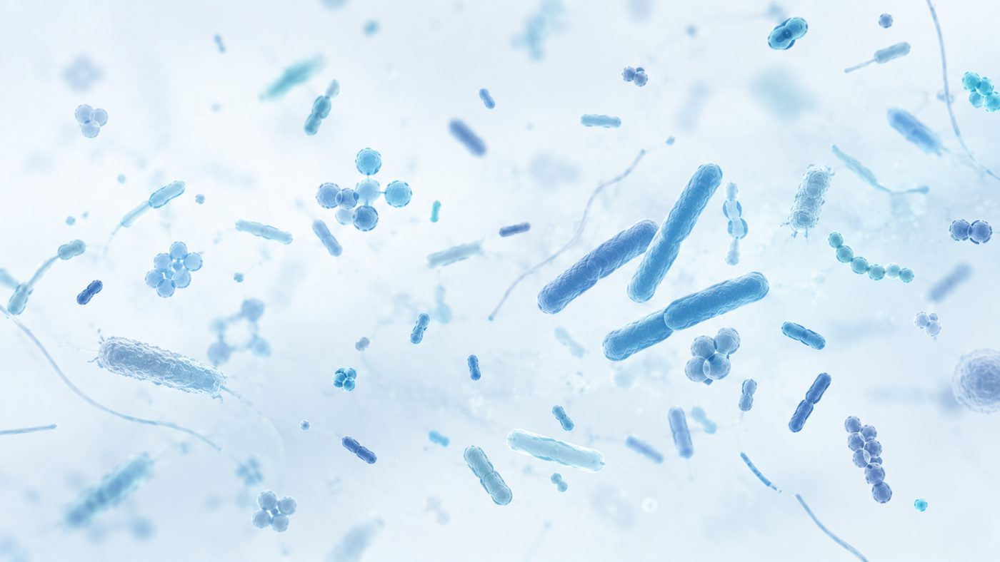
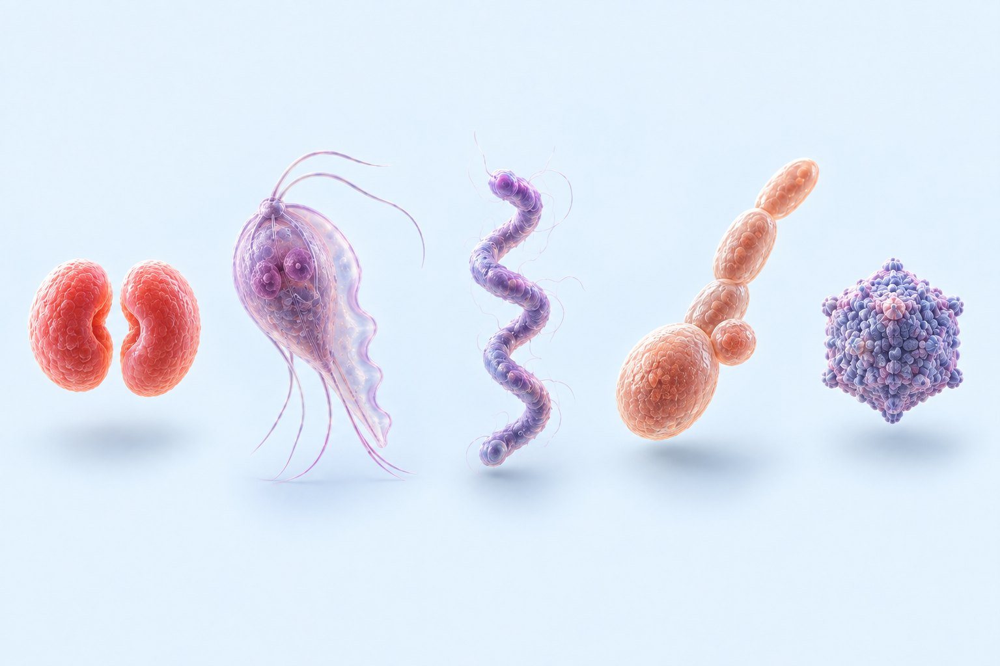
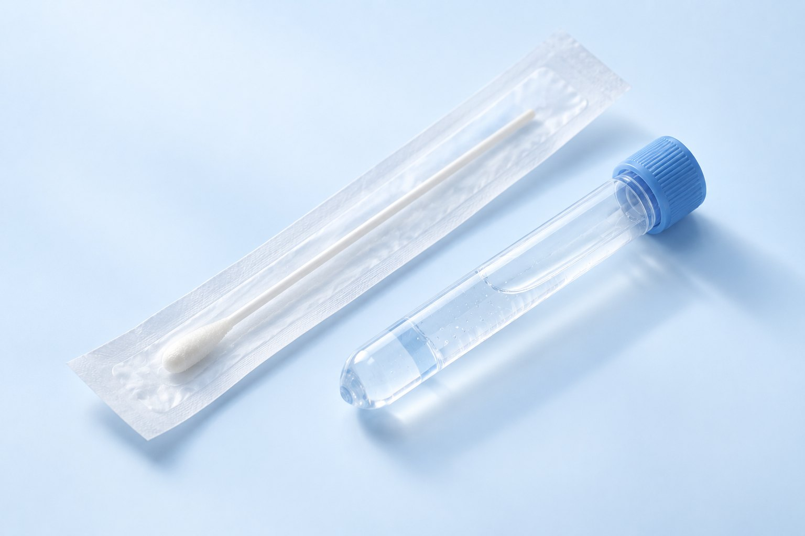

ГЕНОБИОМ определяет бактериальный состав влагалища и полости матки — микробиоту, которая участвует в защите слизистой от инфекций и связана с успешной имплантацией эмбриона. Исследование также выявляет возбудителей урогенитальных инфекций — бактерии, грибы и вирусы.

Микробиом — сообщество микроорганизмов, которое в норме населяет слизистые оболочки.
У большинства здоровых женщин во влагалище преобладают лактобактерии: они поддерживают кислую среду и сдерживают рост условно-патогенных бактерий, избыточный рост которых может вызывать воспаление и связан с репродуктивными неудачами.
Когда доля лактобактерий снижается, их место занимают условно-патогенные бактерии, например гарднереллы. Это состояние называют дисбиозом; оно может протекать бессимптомно.
В полости матки бактерий значительно меньше, и по вагинальному материалу нельзя судить о микробиоте эндометрия. В проспективном исследовании 438 пациенток результаты посевов из двух отделов совпали лишь в трети случаев.
Исследования назначает врач индивидуально: они не входят в обязательный объём обследования.
Исследования различаются материалом и показаниями. Выберите исследование — ниже откроется его описание.
Эндометрий — слизистая оболочка полости матки, в которую внедряется эмбрион. Бактерий в нём значительно меньше, чем во влагалище, поэтому для исследования нужен материал из полости матки.
Исследование определяет, какие бактерии присутствуют в образце эндометрия и какую долю занимает каждая. Отдельно оценивают долю лактобактерий — по ней судят о том, насколько сообщество смещено.

В заключении указывают состав сообщества и долю лактобактерий. По ней оценивают состояние микробиоты:
Состав влагалищной микробиоты меняется в течение цикла, с возрастом, после антибиотиков, родов и на фоне гормональной терапии. У большинства женщин репродуктивного возраста в ней преобладают лактобактерии одного вида.
Исследование показывает, какие бактерии и грибы присутствуют, какую долю занимает каждый и к какому типу относится сообщество в целом. В отличие от микроскопии мазка, исследование определяет, какие именно микроорганизмы преобладают.

Сообщества с преобладанием разных видов Lactobacillus различаются по стабильности: одни сохраняют состав длительное время, другие чаще смещаются в сторону условно-патогенных бактерий. В заключении указывают преобладающий вид.
Условно-патогенные бактерии, например Gardnerella и Prevotella, присутствуют и в норме. Значение имеет не сам факт их выявления, а доля в сообществе.
Чувствительность к стандартной терапии у Candida albicans и у C. glabrata, C. krusei различается, поэтому вид указывают отдельно. Это значимо при рецидивирующем кандидозе.
Наиболее стабильный вариант: среда кислая, доля других бактерий низкая.
Также лактобактериальные типы; встречаются реже.
Лактобактерии преобладают, но этот вид чаще выявляют при переходе к дисбиозу или при восстановлении после него.
Лактобактерий мало, преобладают условно-патогенные бактерии. Такое состояние связывают с бактериальным вагинозом, который часто протекает бессимптомно.
Дисбиоз — изменение соотношения собственных бактерий. Инфекция — присутствие возбудителя, которого в норме нет, например возбудителя ИППП. Лечат их по-разному, поэтому в заключении они указаны раздельно.
Часть инфекций протекает бессимптомно и выявляется только в анализе. Например, хламидийную инфекцию связывают с воспалительными заболеваниями органов малого таза и трубным бесплодием.

Анализ выполняется по ДНК, поэтому ВИЧ и вирус гепатита C, генетический материал которых — РНК, не определяются: для них проводят отдельные исследования. Выявление ДНК возбудителя говорит о его присутствии в образце, но не о стадии и активности процесса — это оценивает врач вместе с клинической картиной.
Показания к исследованию и его результат обсуждают с лечащим врачом
Гинеколог или репродуктолог определяет, какие исследования показаны в конкретной ситуации.
Панель определяет, что войдёт в заключение и какой материал понадобится. Состав панели можно уточнить в клиентском сервисе.
Мазок или пайпель-биопсию эндометрия выполняет гинеколог амбулаторно. Посещать офис лаборатории не требуется.
Материал в пробирке с консервирующим раствором доставляют в медицинский офис или партнёру лаборатории.
Заключение направляют на электронную почту. Результат интерпретирует лечащий врач с учётом остальных обследований.

Нужна пайпель-биопсия — её выполняет гинеколог. Процедура занимает несколько минут и может сопровождаться кратковременной тянущей болью. День цикла определяет лечащий врач.
Достаточно мазка из заднего свода влагалища. Не во время менструации; за двое суток — без вагинальных препаратов и спринцеваний, за сутки — без половых контактов.
На одном приёме получают два образца — мазок и материал биопсии. Возбудителей инфекций определяют в тех же образцах, дополнительное взятие не требуется.
Исследование выбранной панели и заключение врача-генетика. Приём гинеколога и взятие материала оплачиваются отдельно.
Набор для взятия материала заказывают в Геномед — на сайте или через клиентский сервис — и доставляют по указанному адресу.
После курса антибиотиков состав микробиоты меняется, поэтому срок исследования определяет лечащий врач.
14 рабочих дней с момента поступления образца в лабораторию. Дата поступления и дата выдачи указаны в заключении.
Исследования заказывают по отдельности или вместе. Состав панели определяет лечащий врач в зависимости от клинической задачи.
Исследования в составе панели стоят дешевле, чем заказанные по отдельности. Полная панель — на 20 % дороже одной микробиоты.
Материал: пайпель-биопсия эндометрия. Срок — 14 рабочих дней. В стоимость входят исследование и заключение врача-генетика; приём гинеколога и взятие материала оплачиваются отдельно.
Исследование назначается индивидуально; результат интерпретирует лечащий врач с учётом других обследований. Стоимость указана справочно и не является публичной офертой — актуальные цены в каталоге price.genomed.ru.
Состав сообщества и конкретные возбудители определяют разными группами мишеней. Маркерные участки 16S (у бактерий) и ITS (у грибов) — фрагменты ДНК с консервативными и вариабельными областями: по ним определяют состав сообщества и доли микроорганизмов. Зонды панели обогащения выявляют конкретных возбудителей, в том числе присутствующих в низкой концентрации. Обе линии выполняются из одного образца.
Микроскопия мазка, посев и ПЦР отвечают на разные клинические вопросы, но не дают полной картины сообщества. Секвенирование ДНК определяет его состав и соотношение микроорганизмов.
В многоцентровом исследовании (1740 пациенток) чувствительность диагностики бактериального вагиноза по критериям Амселя составила 75,6 %, молекулярного теста — 92,7 %.
Исследование выполняют в собственной лаборатории Геномед. Заключение готовит врач-генетик и направляет на электронную почту. Объём заключения зависит от выбранной панели: в него входят только заказанные исследования.
Врач-генетик оценит показания к исследованию, поможет выбрать панель и интерпретирует результат. Консультация доступна очно и онлайн и не обязывает заказывать исследование.
Микробиота эндометрия, микробиота влагалища и урогенитальные инфекции вынесены на отдельные вкладки. Внизу — карточки панелей: любое исследование по отдельности, пара с инфекциями или всё вместе.